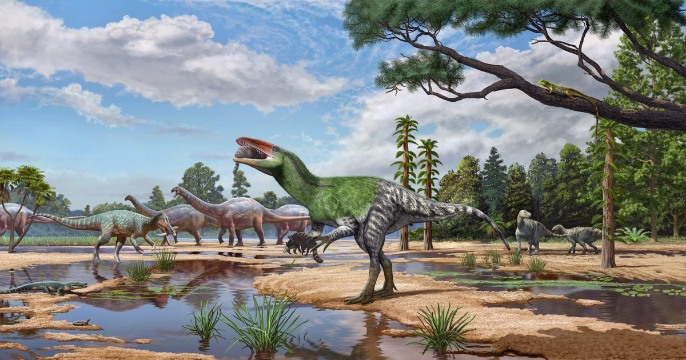

Новый пернатый динозавр - первый мегараптор, обнаруженный в Европе
Его название означает «непокоренная женщина-воин».
Сообщение «Новый пернатый динозавр - первый мегараптор, обнаруженный в Европе» впервые появилось на Nautilus.

Его название означает «непокоренная женщина-воин».
Сообщение «Новый пернатый динозавр - первый мегараптор, обнаруженный в Европе» впервые появилось на Nautilus.